Worldlet / Companion / Saved checkpoint
Fox animation progress
Polishing paused at the user's request · September 27, 2026 · 2D anatomical animation route
A truthful snapshot of the 20-state repertoire, research, evidence and unfinished work. This is a progress record, not a claim of release readiness.
20Planned states
20Implemented drafts
0Fully polished states
0Final App acceptance
0Additional states planned
Scope fixed at 20 states; polishing paused. The former additional 12 states are cancelled, not deferred. Existing experimental code is retained but is not an enabled state or a delivery commitment. Successful geometry, render-parity or routing checks are not final visual acceptance.
State-by-state checkpoint
All 20 active entries below are available as Dev anatomical performances. Polishing is paused; none has final per-state acceptance. Release continues to use the previous painted renderer.
| State | Status | Implemented / remaining |
|---|
01 · Idle
idle | Draft · paused | Breath, seated weight shifts, ears and tail. Remaining: sustained native frame pacing and incoming-state transitions. |
02 · Greeting
greeting | Draft · paused | Two wrist phrases, painted side during wrist rotation and rigid head. Repaired excessive local chest stretch without reducing acting amplitude. Remaining: final palm proportions, full-cycle native acting/acceptance. |
03 · Listening
listening | Draft · paused | Supported attentive lean and paused held props. Remaining: physical hand/prop transitions and native continuous review. |
04 · Acknowledging
acknowledging | Draft · paused | Paw-to-chest, precise nod and torso bow; future phrases cancel on interruption. Remaining: hand shape and task handoff. |
05 · Thinking
thinking | Draft · paused | Held thought pose, subtle life and conversation/prop pause. Remaining: contacts, transitions and native review. |
06 · Explaining
explaining | Draft · paused | Measured open-palm phrases and body response. Remaining: natural wrist/palm and distinction from other raised-paw gestures. |
07 · Reading
reading | Draft · paused | Page turn, interrupted pause/resume, closure and release before other performances. Lap-book cover now remains readable at 96/144/192px HUD sizes. Remaining: material/contact seams and native continuous review. |
08 · Searching
searching | Draft · paused | Magnifier pickup, two sweeps, held conversation and return before another performance. Remaining: grip/occlusion quality and continuous native review. |
09 · Working
working | Draft · paused | Dev now settles typing, closes/carries/parks before a different prop, holds on conversation and retrieves/reopens before working again. The installed laptop no longer fades with an outgoing pose. Remaining: native pacing/continuous acceptance, final parking and hand quality. |
10 · Awaiting user
awaiting_user | Draft · paused | One invitation followed by quiet planted rest. Interruptions now suppress future invitation starts while preserving smooth exits. Remaining: real-control targeting and previous-tool cleanup. |
11 · Awaiting service
awaiting_service | Draft · paused | Folded paws, one work-surface glance, patient hold. Fixed a future glance launching after Listening had interrupted the wait; numerical and WebKit transition checks pass. Remaining: prop stowing and actual task-transition acceptance. |
12 · Notifying
notifying | Draft · paused | Single raised-paw signal without looping. Remaining: actual-item targeting, policy integration and gesture distinction. |
13 · Urgent
urgent | Draft · paused | Upright attention, bounded signals and cancellation. New: head/ears respond while occupied hands safely finish; response survives handoff. Remaining: native continuous review and live-policy acceptance. |
14 · Succeeded
succeeded | Draft · paused | Authored success response. Remaining: physically finish prior work before the outcome gesture and verify real success routing. |
15 · Blocked
blocked | Draft · paused | Authored constructive blocked response. Remaining: distinction from waiting/explaining and actual failure-path acceptance. |
16 · Looking
looking | Draft · paused | Ears lead gaze/body, full look timing, retained lap book. Remaining: full-cycle small-HUD and transition review. |
17 · Grooming
grooming | Draft · paused | Two brush strokes with supported chest/scarf follow-through. Remaining: convincing fur/scarf contact and hand silhouette. |
18 · Stretching
stretching | Draft · paused | Brace, chest lift, release and settle; planted feet and rigid head. Remaining: body deformation quality and native full-cycle review. |
19 · Delighted
delighted | Draft · paused | Free-hand hop, secondary motion and interrupted settlement. A released lap book selects seated delight; retrieving it cannot trigger a mid-blend takeoff. Remaining: weight/landing quality and continuous native acceptance. |
20 · Farewell
farewell | Draft · paused | One slow open-palm wave, planting and small bow. Chest now leads the rigid head by 120ms, followed by soft eyes; support, interruption and WebKit checks pass. Remaining: hand quality and native real-context review; not wired to delay shutdown. |
Research and implementation preserved
Art & anatomy
Keep the accepted painted 2D appearance. Separate body, forelimbs, palm/finger studies, eyes, ear roots, neck and hidden surfaces. Curved length-preserving limb skin and supported body deformation; no exposed head scaling/shear. 3D/Blender and paid Spine were not selected for the current route.
One persistent performance player
Per-entry state clocks, finite phrases, held motion and cancellation. Interrupted gestures must not start new waves/nods. Sparse and 30/60/120 Hz sampling compare timing consistency; this does not prove native display performance.
Props have ownership
One retained book or magnifier episode survives conversation. Search exits return the lens before starting another performance. Reading exits finish the safe page phase, close/place/release the book, then hand over. A parked book remains as an independent lap layer.
Rendering & performance
Shared World/desktop Dev portrait, whole-frame GPU composition, cached eye writes and reused texture allocations. Same-sized pixel updates use texture sub-updates. No resolution or mesh reduction was used to obtain these optimizations.
Observed native limitations
Historical search endpoint check on main 2ef7a8a: RAF median/p95/max 26/36/222 ms; resting 26/38/76 ms. Newer idle and mixed-route samples are recorded below, but are not like-for-like search comparisons or proof of stable 60 fps.
Interaction constraints
One Fox conversation and one dialogue system. Thoughts use head dots, not extra conversation bubbles or fake progress messages. Motion must reflect actual activity, not manufacture background work or success. Keep the deferred twelve disabled.
Known rejected shortcuts: wrist-pivot alignment alone does not align painted palm surfaces; numerical contact alone does not prove correct occlusion. RGB-crossfaded eyelid patches exposed doubled edges; contour/threshold experiments were rejected. Do not resurrect these as accepted solutions.
Timing and verification checkpoint
Native book-exit repair verified · 6024206: Reading → Delighted now completes autonomously and keeps painting afterward. Handling 440 paints/7.4s (RAF 17/18/53ms), blend 39/0.6s (17/18/18ms), performing 129/2.1s (17/18/20ms). The same endpoint issue was reproduced and repaired in laptop closure, with 1,000 new endpoint/contact checks plus existing handling and rendered carry/retrieve checks passing. Whole-state artistic and desktop acceptance remain open.
Concrete freeze cause reproduced: Installed WebKit's real-time Reading → Delighted preview threw Invalid book placement/release, breaking the RAF chain. Endpoint floating-point overshoot is now clamped in the owning book closure/placement/release curves; strict validation remains. Added 3,000 endpoint checks, with 17,086 rest and 6,509 supported-delight samples passing. Native post-fix review remains open; earlier hidden-page attribution was only a hypothesis.
Lifecycle correlation: Dev diagnostics now retain twelve deduplicated page visibility/focus/surface changes. Loss of focus is not treated as hidden: a desktop companion must keep working without keyboard focus. Long intervals remain in the timing data. Source inspection confirms absolute-time catch-up, but native occlusion/delivery cause is not yet established. No animation-clock policy or acceptance count changes.
Readable report follow-up · 43a6e3b: Native inspection now returns all displayed phase summaries. Delighted handling: 386 paints over 6.4s, RAF 17/18/22ms and CPU 3/6/16ms. During tool-idle observation the report became stale; after resuming, the mixed window contained a 24,344ms RAF gap and no completed performing segment. Next: correlate native visibility/focus and animation-clock resumption. This does not explain the earlier 721ms event and does not pass continuous animation acceptance.
Native follow-up at 2f8184f: Delighted / performing is now independently retained: 127 paints over 2.1s, RAF median/p95/max 17/18/24ms and CPU draw 4/8/12ms. The mixed handling/performing/settled window also contains an unresolved 721ms RAF gap; no uninterrupted-frame-rate pass is claimed. Accessibility truncates the long combined report, so individual readable segment items are the next diagnostic step. Preview was stopped; desktop mode was not verified.
September 26 update: Dev timing now separates handling, pose blend, performing, settled continuation and reduced motion within the same requested state. Each route/phase retains its own latest summary, so the quiet tail cannot erase the gesture. Fifty dense/sparse full-frame comparisons and bounded timing/privacy regressions pass. These are pipeline labels, not per-joint motion detection or native acceptance; held breathing and authored search pickup remain performing. New native phase-separated measurements are still needed.
Integrated in bf7845ab: local Dev timing retains the latest completed segment for each allowed animation route, independently for World and desktop. Returning to Idle no longer erases a short gesture's summary. The panel shows the six latest summaries; long segments retain only their last 600 samples and explicitly report that limit. No personal text or timing upload is involved.
| Evidence | Result | Limit |
|---|
| Native World access restored · September 26 | Main 151f26d entered the world without account changes. Local Reading → Delighted preview showed the held book, then the retained closed lap book. Preview stopped and panel closed. | Endpoint observations only. Earlier login/startup limitation is historical, not the current blocker. |
| Native Reading · current sample | 600 Reading-only paints: RAF median/p95/max 17/17/25ms; CPU draw 2/8/11ms. Completed 38.0s segment: 2,272 paints, last 600 RAF 17/18/38ms and CPU 2/9/12ms. | World surface only. Quantiles retain a bounded tail, not the entire run; GPU/compositor timing is not measured. |
| Native Reading → Delighted request | Last 600 paints: RAF 17/18/74ms; CPU 3/9/12ms. Held and subsequently closed book observed in the real portrait. | Requested route includes book handoff and settled continuation. Not isolated gesture timing or final artistic acceptance. |
| Focused timing regression | Passed: retention, bounded storage, route/privacy filtering, pause and surface boundaries. | Synthetic clock checks, not native visual acceptance. |
Native Greeting spot check · e1d310d | Lifted arm observed. Mixed Greeting/Looking sample: RAF median/p95/max 17/21/50 ms; CPU draw 2/6/10 ms. | 600 mixed-route paints; cannot certify Greeting alone. |
| Full Mac controls fixture | Previously stopped at the avatar tooltip assertion: expected “Click to type, Hold to speak”; actual “Open Companion · Drag to move”. | Did not reach its timing assertions; not counted as a passing suite. No unrelated control changes made. |
| Remaining timing acceptance | Record isolated native entry, motion, settling and interruption for each active state on both surfaces. | A route can include a finite gesture's settled pose. Route timing is not automatically active-motion timing; CPU draw also excludes asynchronous GPU/compositor work. |
Latest polish · supported delight and mixed props
Ear rendering avoids repeated fixed-weight calculations: A bounded per-inspector cache preserves exact vertex results, resolution and mesh density. All 52,272 reference vertex comparisons pass; the ear-only CPU benchmark improved from 17.783ms to 9.787ms per 156,816 vertices, not a whole-frame speedup claim. Painted-ear, all-20-state WebKit and GPU/reference regressions pass; wide/narrow screenshots were inspected. Native frame-rate benefit and the earlier 66ms gap remain unverified.
Native explanation/acknowledgment checked · acf1bf4: Explanation ran 930 paints/15.6s, then real composer input produced a 40-paint Listening blend and 406 further paints/6.8s. Acknowledgment completed its finite gesture and entered settled breathing (41 entry-blend paints plus 104 performing paints). Screenshots showed distinct offering/chest-paw poses with no obvious head elongation. Explanation still recorded a 66ms maximum RAF gap; continuous return contours and whole-state acceptance remain open. No message was sent; preview stopped and panel closed.
Grounded explanation return · September 27: Measured a 1.622 HUD-pixel right-paw dip during interrupted explanation, then restored the shoulder release arc without shortening the limb or shrinking the gesture. A rapid return now preserves the outgoing arc and the original performance clock instead of jumping. The new 55,282-frame painted-contour check, 15 nested interruptions and existing continuity/prop regressions pass. WebKit wide/narrow return sheets were inspected. Native continuous and whole-state acceptance remain open.
Interrupted explanation no longer starts new gestures: Pending reaches, palm opening and later emphasis beats are cancelled while already-started motion continues smoothly. Forty-eight boundary cases, five rapid reversals, the existing 85 gesture cases and the full performance suite pass. WebKit rendered three interruption paths and all 20 states (1,032 samples), with wide/narrow layouts inspected. Painted paw clearance near the ground still needs measurement/refinement; native and whole-state acceptance remain open.
Native replay verified · 7e09dce: Repeating Greeting without stopping or changing state visibly restarts the forelimb gesture. The new complete segment records 265 paints/4.4s (RAF median/p95/max 17/18/24ms). A further replay interrupted by the real empty composer records Greeting 94 paints/1.5s, Listening blend 40/0.6s and Listening performance 391/6.6s. No message was sent. Listening's maximum RAF gap was 52ms, so perfect frame pacing is not claimed. Preview stopped, panel closed; whole-state acceptance remains open.
Same-state Dev replay repaired: Repeating Preview animation after Greeting settled now starts a fresh performance instead of merely extending its timer. The regression failed before the fix and passes afterward; the rendered replay shows the raised paw. Different-state handoffs and real input remain continuous. Mounted Chromium checks cover input priority, expiration, disposal and non-Dev rejection; 900/390px fixtures were inspected. Native replay acceptance remains open, and state counts are unchanged.
Twenty-state WebKit overview
Native playback verified: Stretching completed with 332 performing paints (RAF median/p95 17/18ms). A fresh Greeting was interrupted through the real composer: 40 listening-transition paints followed by 637 sustained listening paints on one revision. Automatic-refresh attempts were excluded. No messages were submitted; preview was stopped. This is native playback evidence, not all-state final acceptance.
Full performance regression restored: Updated seven stale expectations to require the runtime phase label without dropping other fields. The complete suite now passes: 5,859 working and 4,632 searching conversation samples, 13 search handoff destinations, book/task transitions, cancellation, reset and sparse/30/60/120Hz parity. This is runtime-fixture evidence, not visual acceptance.
Grounded Greeting return: Restored the shoulder release arc when a wave is interrupted by Listening/Idle. Actual painted-paw clearance checks cover 24,104 frames; worst dip is now 0.19 HUD pixels (quarter-pixel limit), with rigid head, planted soles and continuous second interruptions. Native and other-gesture clearance remain open.
Social interruption audit: Greeting preparation, palm opening and Acknowledging reach now cancel when not yet started. The expanded suite covers 85 interruptions; three WebKit transition sequences and 1,032 active-state samples pass. The subsequent grounded-return check addresses the noted Greeting wrist dip; native acceptance remains open.
Early grooming interruption: Fixed a cancelled grooming reach starting during the transition to listening. Support/reach now respect the interruption cutoff; already-started motion stays continuous. Six early-cutoff sweeps, 45 runtime gesture interruption cases and a button-triggered WebKit preview pass. Whole-state acceptance remains open.
Stretching refinement: Spread deep-reach skin deformation into the upper ribs. Sampled local expansion falls from 1.6593× to 1.5695× while preserving a 5.55px chest lift, rigid head and planted contacts. New strain/velocity regression checks, 125 GPU frames and all 1,032 WebKit state samples pass. Native whole-state acceptance remains open.
Paw-side refinement: Reduced the painted side's projected thickness from 0.75 to 0.55 after same-pose review. Wrist attachment and front/back endpoints remain unchanged; 42 wrist-angle checks and all 1,032 WebKit samples pass. Native gesture acceptance remains open.
Paw artwork: Dev now uses a rounded open-paw derivative without the old opposed-thumb shape. Only the local paw crop is used; head, body, wrist attachment and motion are unchanged. Registration, 42 wrist angles and 1,032 WebKit samples pass. Native HUD readability and side thickness remain under review; no state acceptance count changed.
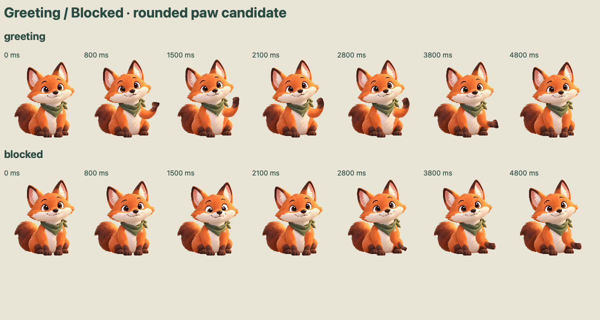
New Dev paw silhouette; original artwork is retained.
Native Desktop continuity: The repaired main app retained actual Desktop Idle/Looking paint samples without the prior restoration exception. Working subsequently completed 1,389 Desktop paints over 23.2s (RAF median/p95/max 17/18/28ms), then 1,314 World paints over 22.3s after return without a new entry blend. A refresh-interrupted earlier attempt was excluded. This validates those playback paths, not all-state visual acceptance.
Native follow-up: Farewell completed on main Dev with 250 performing paints over 4.1s (RAF median/p95/max 17/18/28ms). Desktop review exposed a detached Back control causing a world-restoration exception; its ownership is repaired and three mocked round trips plus the existing desktop UI suite pass. Native desktop animation acceptance is still open.
Full-phrase follow-up: Greeting retains its higher two-part welcome; Farewell keeps its lower single wave, with newly staggered chest, head and soft-eye follow-through. No state was promoted to fully polished or accepted.
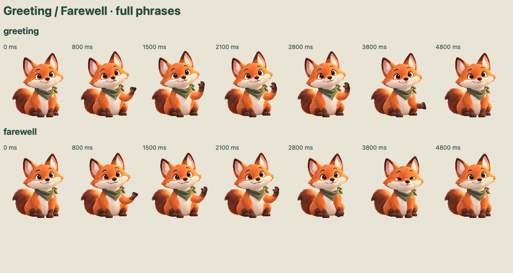
Full-phrase sampled review, not native real-time acceptance.
All 20 active states were entered independently and sampled through their authored duration plus a two-second tail: 1,032 rendered samples, expected held/finite endpoints, light/dark backgrounds and wide/narrow layouts passed. This is not final artistic acceptance. Greeting/Farewell and Awaiting user/Blocked have similar sampled silhouettes; their full temporal phrases and hand shapes are the next comparison targets.
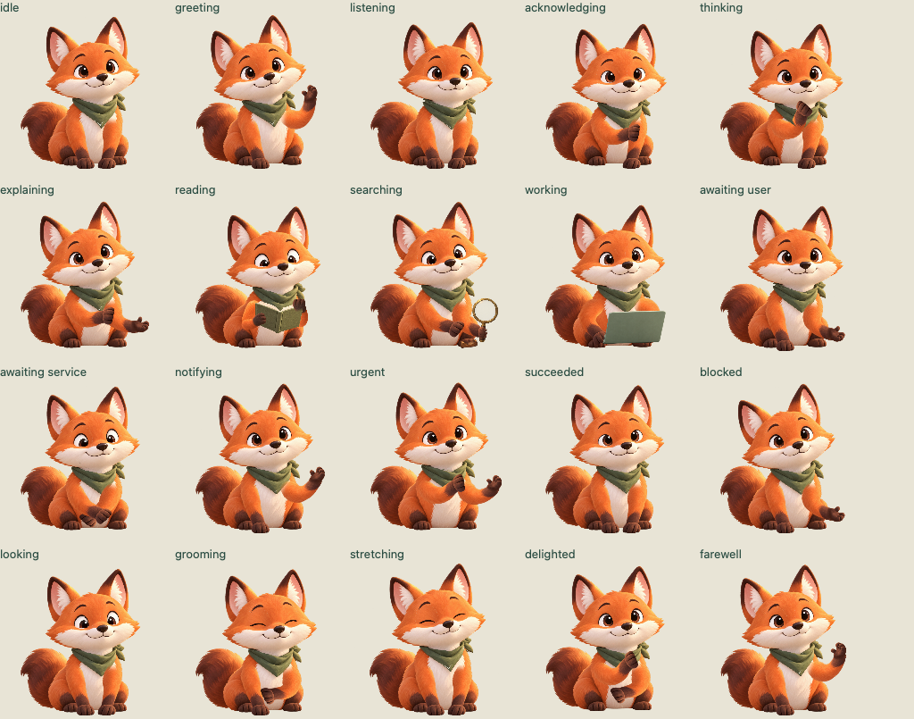
One selected pose per state, not all frames or a claim that the states are finished.
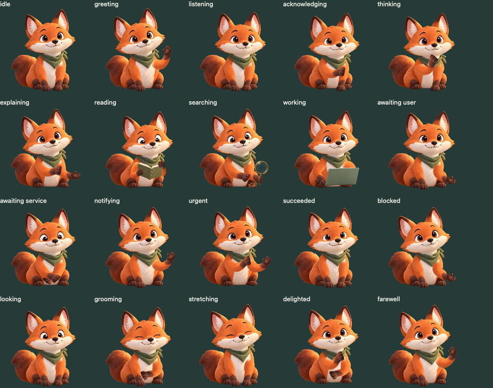
Dark-background edge review; actual native desktop acceptance remains open.
A book resting on Fox's lap no longer follows an unheld jump. That context uses a seated delighted phrase: gathered paws, a warmer head tuck, ears and tail. With no lap book, the original small hop remains. Retrieving the book during interruption cannot suddenly switch the outgoing gesture to flight.
6,509 trajectory samples and direct/interrupted handoffs pass, along with two minimal hidden-work-rest regressions and sixty mixed-state requests. Those broader checks also exposed and repaired a work-rest pose discontinuity after hidden frame gaps. Actual Dev rendering covers all three retained props, Rest all props → Resume search controls, and wide/narrow layouts without page/console errors or overflow. Native continuous and final artistic acceptance remain open.
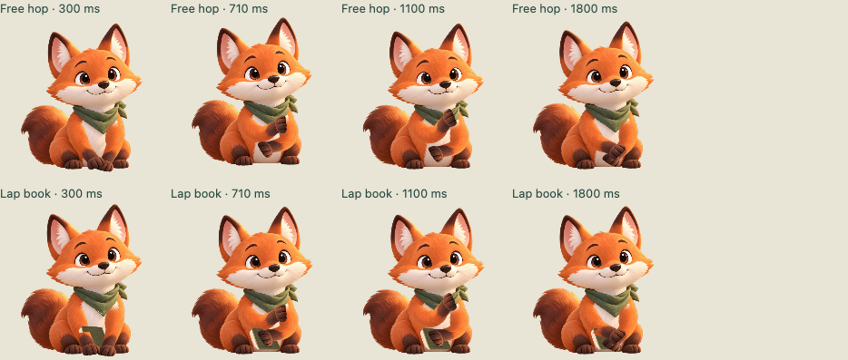
Same Dev renderer and original artwork. Support is fixed per gesture, including during interruption; no new semantic state.
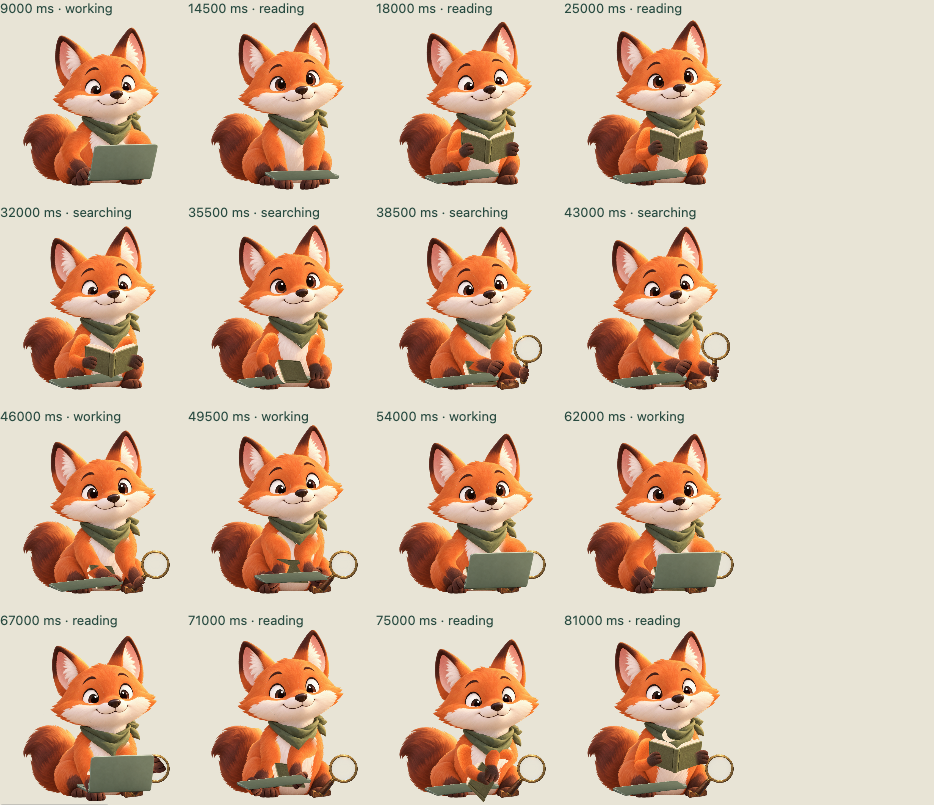
Repeated prop ownership review, not isolated reset-to-neutral snapshots. Final hand/material and native motion quality remain under review.
Faster physical handoff
The uninterrupted work-to-park sequence now takes 7.45 seconds instead of 14.05 seconds. Typing recovery stays at 650ms; lid handling takes 3.2s and carrying takes 3.6s. Every grip, support and release phase remains on the same continuous path. Returning to work uses the same faster retrieval/opening policy; interruptions can still brake and hold.
Actual Dev rendering and Pause carry → Resume reading → Return to work controls pass at 900px and 390px widths, without page/console errors or horizontal overflow. The fixture now interrupts inside the faster carry interval. Native continuous playback and final artistic acceptance remain open; no whole state is promoted by this pacing change.
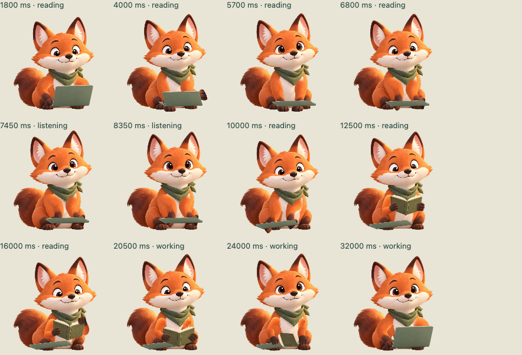
Current live timing. Sampled poses and interaction checks, not a claim of native 60fps or final acceptance.
Earlier milestone · retained laptop integrated into Dev
Work → close → park → read → retrieve → work. The shared World/desktop Dev portrait now uses the physical carry controller and retains the parked computer through other states. Conversation can pause the carry. The new state waits for free hands; returning to work retrieves and opens the same device. The outgoing computer no longer dissolves with the old pose.
At this earlier checkpoint, 14,839 lifecycle samples passed, plus actual Dev rendering and Pause carry → Resume reading → Return to work controls at wide/narrow sizes. The hand/lid depth regression is guarded, and fractional book deadlines no longer requeue themselves. Not final acceptance: native continuous playback and final hand/parking quality remain open. The original fourteen-second close-and-carry timing has been superseded by the 7.45-second calibration above.
Historical native follow-up on main 7b4cb6e: the App showed “Continue with Google” rather than the world; no sign-in or account change was attempted. Native World access was later restored at 151f26d, as recorded in the timing table above. Neither this earlier limitation nor the newer spot checks constitute full-state native acceptance.
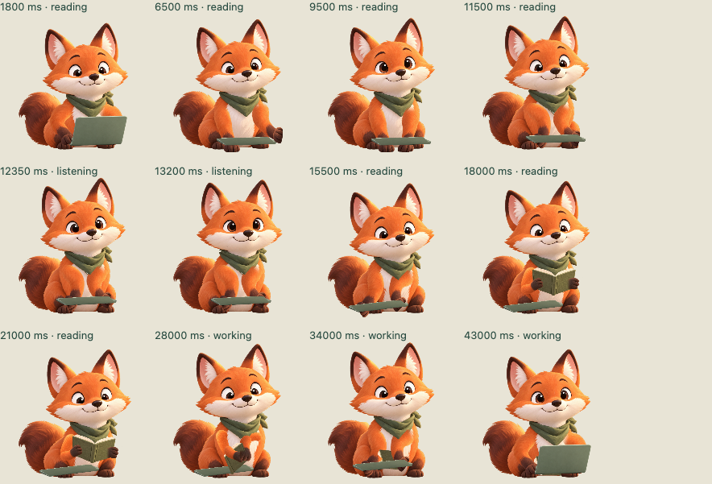
Actual Dev loader, not only the isolated choreography. Release remains on its existing renderer; no complete state newly accepted.
Precomputed carry and retrieval
New: interruptible carry and retrieval. Precomputed rotation curves replace iterative hand solving during playback. Carry can brake into a hold, continue parking or reverse to the front without restarting the pose. 9,417 checks cover spline continuity, contact, planted support, reversal, long holds and sparse/30/60/120Hz agreement. This is continuous joint animation, not a frame-limited sprite sheet.
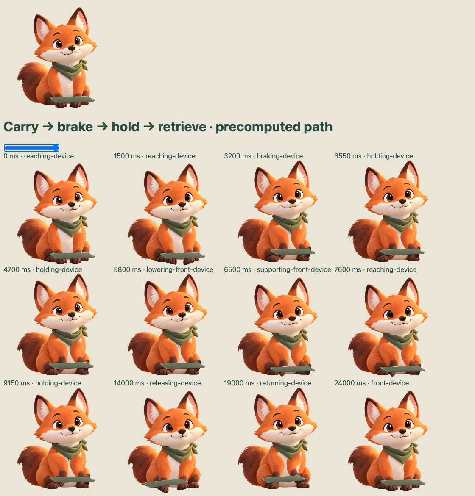
Earlier isolated controller review. Playback uses 271 saved rotation samples and continuous interpolation; native acceptance remains pending.
Reach → grip → lift → carry → lower → release. A new 5.4-second study moves the complete closed laptop with one rigid transform and full opacity. Both painted paws follow its contact points without shoulder translation or head stretching; body support accompanies the lift. The parked laptop remains visible.
541 reference trajectory samples, planted soles, torso deformation bounds and 12 rendered CPU/GPU comparisons pass. The slider was exercised at wide/narrow sizes with no page errors or horizontal overflow. This earlier study is now the reference for the integrated Dev lifecycle above. Counts remain unchanged.
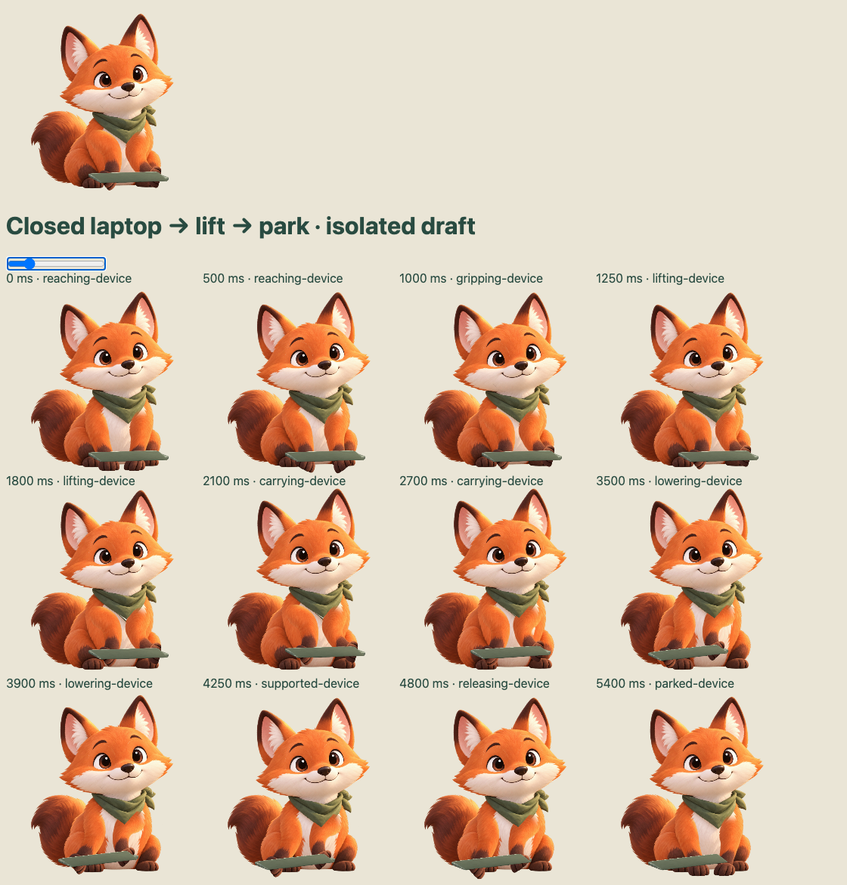
Isolated choreography, not final acceptance. The parked device still occupies part of the lower silhouette; contact and depth need further artistic review.
Greeting hand and body
A painted wrist side, less concentrated torso strain. Dev now uses the existing side-paw artwork during wrist rotation, preserving closed/open endpoints. A re-run exposed excessive chest stretch in the old greeting; adaptive ribcage blending reduces peak local area expansion from 1.762 to 1.577 without shrinking the gesture. Quiet breathing and planted support remain intact.
42-angle wrist comparisons, 2,200 skin-trajectory samples, support-state regressions and actual Dev rendering pass. Final hand proportions and native continuous acceptance remain open. The 20/0/0/12 progress counts are unchanged.
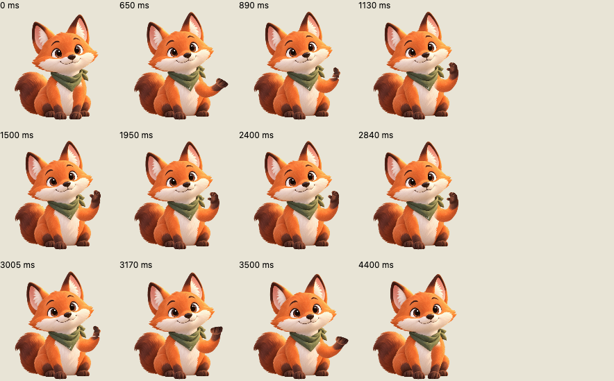
Actual Dev loader, 0–4,400ms. Existing painted side asset, not a newly generated Fox or replacement head.
Readable lap book
Placed, not disappeared. The shared lap pitch changed from 60° to 32°, keeping the original book pixels and hand-contact path while exposing more cover and page edge. No scale-up of Fox, new book image or alpha fade was added. Actual 96/144/192px idle and explaining renders retain a visible book; the 97-frame depth/render comparison and interrupted book lifecycle checks pass. Native continuous acceptance remains pending.
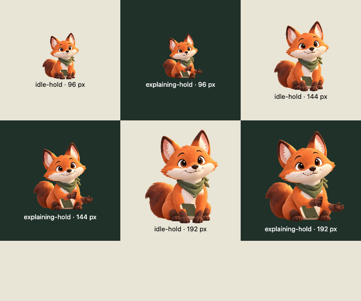
Actual canvas sizes, not enlarged previews. Both hands remain free after the supported book is released.
Occupied attention
Look up before the hands are free. An urgent request during work, reading or search now blends into a rigid head/ear response while the same arms finish their safe prop path. The response remains through handoff and blends away on cancellation. It adds no state, dialogue or automatic notification policy. This is connected to the Dev renderer, not release.
14,499 sparse/30/60/120 Hz comparisons pass, including early cancellation and rapid re-entry; arm, prop and blink channels remain unchanged. The actual runtime renders all three paths at wide/narrow sizes and exercises request/cancel controls. Native continuous playback and user acceptance remain open; completion counts are unchanged.
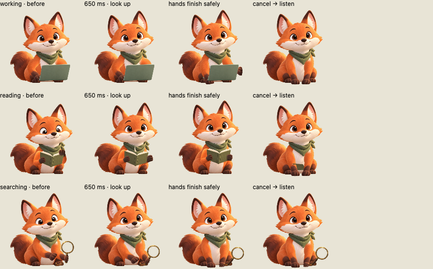
Dev runtime contact sheet. The free-hand gesture still waits for safe release; the head no longer waits with it.
Working-close integration
Native spot check: main 052c472 displayed the open laptop during the local Working preview and retained the closed laptop after Stop preview. Preview stopped and panel closed afterward. A 600-paint idle sample reported RAF median/p95/max 17/21/24 ms and CPU draw 3/12/17 ms. This confirms the native endpoints, not complete trajectory or all-state acceptance.
Now integrated into the Dev portrait. The shared World/desktop renderer loads the complete base and persistent working lifecycle. Work can settle into listening, close on rest and reopen before typing resumes. Conversational head/eye attention is separate from occupied hands. The actual runtime gallery and existing all-20-state rendering checks pass; this is not native continuous-motion acceptance or release promotion.
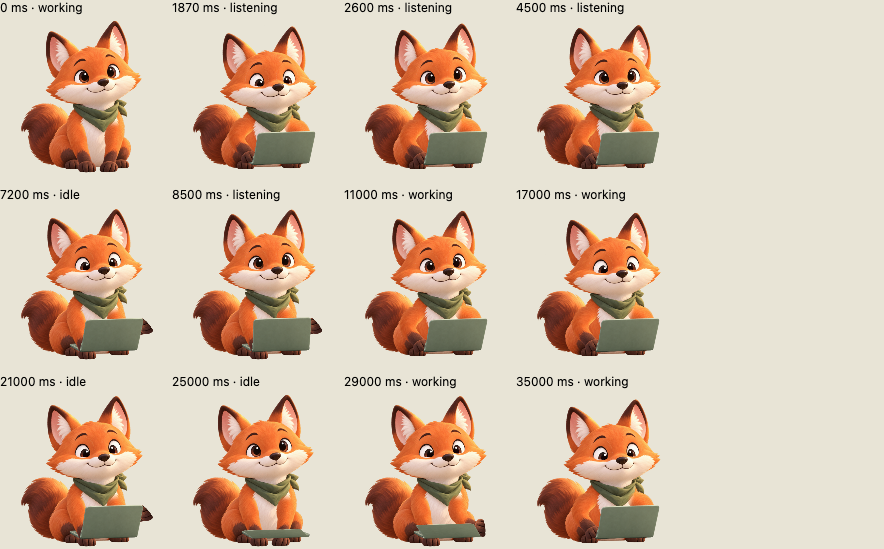
Earlier Dev milestone: work → listen → rest → listen → work → rest → work. Physical stowing is now connected as shown above.
Earlier milestone: interruptible hand/lid control. Closing can brake into a hold, resume, or reopen from the same path. The shared bounded clock preserves position, velocity and acceleration. Its check covers 7,202 samples and 569 pad/lid contacts, long holds, reduced motion and sparse/30/60/120Hz parity. Existing reading handling and book lifecycle checks still pass after sharing the clock.
Run node scripts/fox-working-close-review.mjs --handling for the isolated sequence. Twelve poses at wide/narrow sizes, scrub-to-hold/open interactions and the lid-overpaint guard pass. This lower-level fixture starts from a fixed stopped-keyboard pose; the newer Dev player above supplies typing recovery and conversational attention.
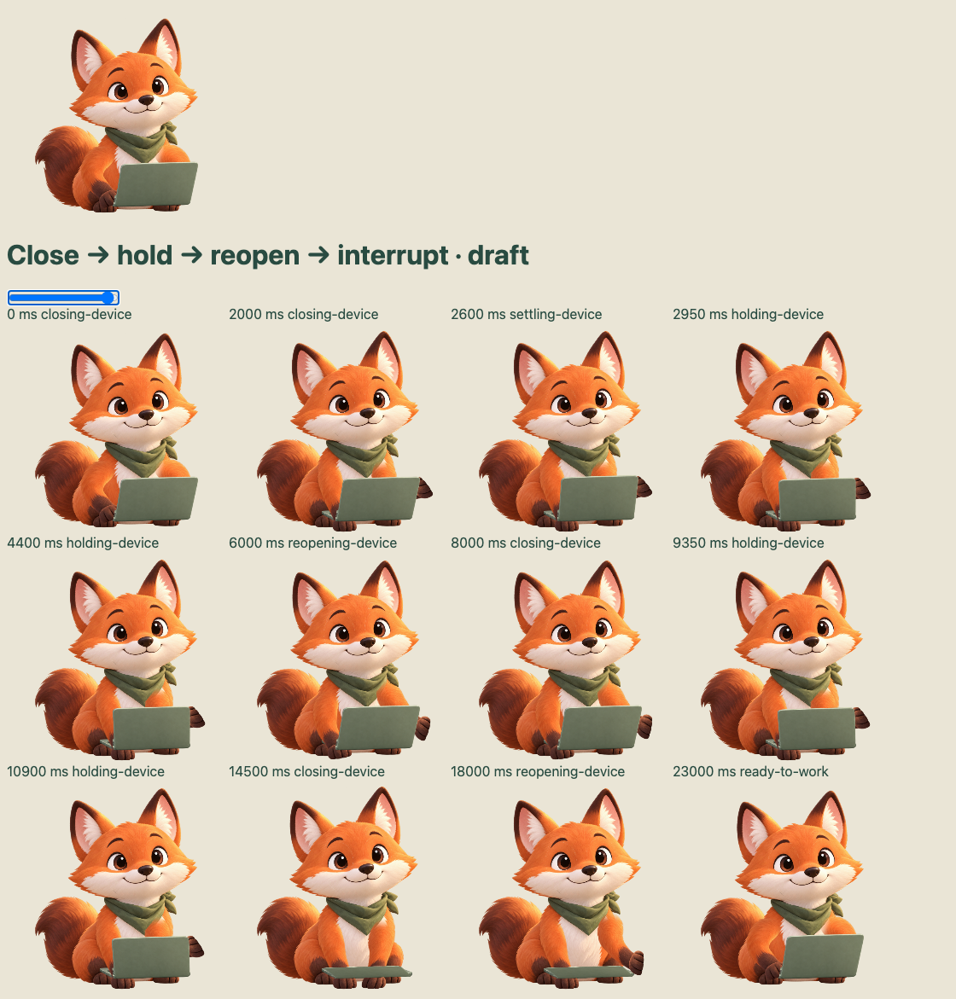
Close → hold → reopen → interrupt. Maximum mean opaque CPU/GPU RGB difference 0.681/255; no new complete state counted.
Latest repair: the right arm now stays behind the lid as the paw presses its far/right edge. This removes the rectangular atlas patch. A 529-sample timeline check includes 217 pad/lid contacts; 12 rendered poses pass the lid-overpaint guard and CPU/GPU comparison (maximum mean opaque RGB difference 0.675/255). No new state is counted as complete.
Current isolated study. Wide/narrow rendering and scrub interaction pass; native acceptance and interruptible work-exit integration remain pending.
Historical checkpoint before the repair
Working → stop typing → touch lid → close → release. A complete keyboard/base image and projected rigid hinge already existed. This checkpoint adds a standalone 4.4-second contact study and opt-in inspector rendering. It is not wired into the live performance player or native resource selection.
- Contact uses the skinned right-paw pad
[.677, .923] and lid point [.875, .665], not the wrist pivot. - The complete base is required for closure; ordinary typing retains its original rendering path.
- The initial Playwright review covered 12 sampled poses at 1120 × 850 and 390 × 844, with a scrub-to-2200 ms interaction. No page errors or horizontal overflow were observed; maximum mean opaque CPU/GPU RGB difference was 0.677/255.
- Historical visual failure, now repaired: the right forearm appeared as an abrupt rectangular patch on top of the lid. The original image below remains as evidence of why render parity alone was insufficient. Interruption/resume and native acceptance are still pending.
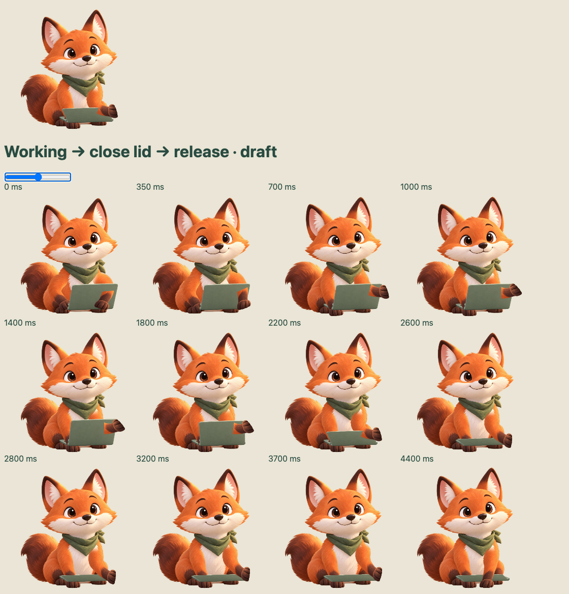
Saved evidence, not approved artwork. The conspicuous near-arm/lid seam is intentionally retained in this checkpoint so the next session starts from the actual defect.
Where to resume
- Keep the existing 20-state batch. The former additional 12 are cancelled. This checklist is archival guidance only; do not resume polishing without a new user request.
- Review native Greeting continuously, distinguishing its active gesture from the settled continuation. Preserve the painted wrist side, adaptive ribcage support and rigid head.
- Review integrated work→park→read→retrieve pacing and final parking at normal HUD size. Retain interruption, lid depth, fractional book-boundary and occupied urgent-response regressions.
- Polish hand articulation, grip/occlusion and raised-paw gesture distinction. Lap-book visibility is repaired at 96/144/192px; review its complete native trajectory and contacts.
- Review each active state in the actual App at normal HUD size, World and desktop mode, on light/dark backgrounds; measure continuous frame pacing and inspect entry/hold/exit/interruption.
- Only increment polished/accepted counts when the corresponding state has evidence for all its gates. The user performs final acceptance on main; release promotion is a separate decision.
Per-state acceptance gate: recognizable intent without a label; natural whole-body weight; no stretched head, detached limbs or clipping; convincing hand/prop contact and depth; smooth entry/exit/interruption; no invented work; appropriate reduced motion; actual native continuous playback; user acceptance.
Authoritative sources and reproducibility
This page is a dated checkpoint. The engineering record remains FOX-ANIMATION.md; it retains detailed experiments, rejected approaches, measurements and caveats. Source code and assets remain in the repository, not solely in chat or temporary files.
Relevant integrated checkpoints before this save: 2652ca2c GPU texture reuse; 2f72b6ce search tool return; 4c8cdd6c book close/release; c9c15c86 complete working base and hinged lid. Git preserves previous versions. Historical checks are not claimed as freshly rerun by this page.